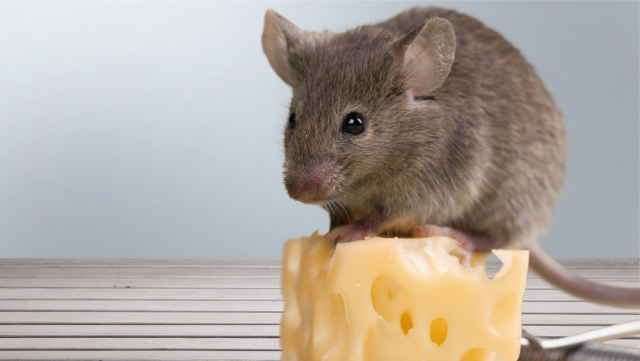
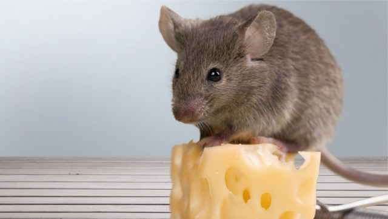

Вступление
Вопрос о том, любят ли мыши сыр, давно прочно укоренился в нашем сознании благодаря многочисленным мультфильмам,
книгам и другим произведениям искусства. Но насколько это соответствует действительности? Давайте разберемся.
 Почему мыши не любят сыр
На самом деле, мыши не являются столь преданными поклонниками сыра, как нам представляют в культуре.
Они предпочитают более высококалорийные продукты, такие как зерно или мясо, поскольку это обеспечивает
им необходимую энергию для выживания. Сыр, в свою очередь, не является оптимальным источником питания для
мышей из-за его низкого содержания белка и жира.
Едят ли мыши сыр на самом деле
Хотя мыши могут попробовать сыр, если им предложить его в пищу,
это скорее всего будет вызвано большим голодом или же просто любопытством, а не предпочтением.
Они скорее будут искать другие виды пищи, более подходящие для их питания.

Откуда пошел этот миф
Истоки мифа о том, что мыши обожают сыр, можно проследить до Европы средних веков,
когда сыр был одним из основных продуктов питания. В то время мыши часто обнаруживались в складах и на фермах, где хранился сыр,
что могло вызывать ошибочное представление о том, что они его активно потребляют.
Таким образом, хотя мыши могут быть любопытными созданиями и попробовать сыр, но это не является их основным источником питания.
Миф о любви мышей к сыру скорее всего остается лишь мифом, который стал частью нашей культурной традиции.
Интересные факты о мышах
Почему мыши не любят сыр
На самом деле, мыши не являются столь преданными поклонниками сыра, как нам представляют в культуре.
Они предпочитают более высококалорийные продукты, такие как зерно или мясо, поскольку это обеспечивает
им необходимую энергию для выживания. Сыр, в свою очередь, не является оптимальным источником питания для
мышей из-за его низкого содержания белка и жира.
Едят ли мыши сыр на самом деле
Хотя мыши могут попробовать сыр, если им предложить его в пищу,
это скорее всего будет вызвано большим голодом или же просто любопытством, а не предпочтением.
Они скорее будут искать другие виды пищи, более подходящие для их питания.

Откуда пошел этот миф
Истоки мифа о том, что мыши обожают сыр, можно проследить до Европы средних веков,
когда сыр был одним из основных продуктов питания. В то время мыши часто обнаруживались в складах и на фермах, где хранился сыр,
что могло вызывать ошибочное представление о том, что они его активно потребляют.
Таким образом, хотя мыши могут быть любопытными созданиями и попробовать сыр, но это не является их основным источником питания.
Миф о любви мышей к сыру скорее всего остается лишь мифом, который стал частью нашей культурной традиции.
Интересные факты о мышах
- Отличные пловцы: Мыши отлично плавают и могут преодолевать водные препятствия,
если им приходится искать пищу или убегать от опасности.
- Отличная память: Мыши обладают отличной памятью и способны запоминать сложные
лабиринты и пути к источникам пищи.
- Социальные животные: Мыши обладают развитой социальной структурой и могут жить
в больших группах, где существуют иерархии и сложные взаимоотношения.
- Прекрасные строители: Мыши могут строить сложные норы с несколькими входами и
выходами, где они могут скрываться от хищников и жить комфортно.
- Хорошие охотники: Мыши обладают отличным чутьем и слухом, что помогает им находить
пищу даже в темноте или на больших расстояниях.
- Разнообразие видов: Существует более 2000 видов мышей, и они обитают почти повсюду
на Земле, за исключением некоторых островов и арктических регионов.
Как правильно ухаживать за мышами: советы по уходу и вниманию
- Обеспечьте мышам чистую клетку или дом, где они могут спокойно жить.
- Ежедневно очищайте клетку от мусора и заменяйте подстилку.
- Поддерживайте в клетке постоянный доступ к свежей воде.
- Кормите мышей специальным кормом для грызунов или свежими фруктами и овощами.
- Обеспечьте мышам игрушки или развлечения для физической активности.
- Поддерживайте чистоту ушей и шерсти у мышей, при необходимости помогая им в этом процессе.